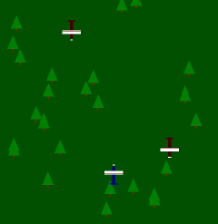
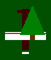

Adventi naptár
Czirkos Zoltán · 2019.02.27.
Láncolt listák
A feladat: írjunk programot, amelyben egy repülővel repkedünk a képernyő alján. Haladjunk egy erdő felett, amelyben fák vannak. Jöjjenek szembe is repülők, amelyekre lehessen lőni a szóköz gombbal. Ha eltalálunk egy ilyet, akkor zuhanjon le (khm, tűnjön el), és ne legyen szabad nekimenni a szembejövő repülőknek sem.
A program grafikája azért persze nem lesz túlbonyolítva. A repülők a jobb oldalt látható módon színes téglalapokból rakhatók össze. Ezeket a megfelelő sorrendben egymás fölé rajzolva (előbb a testet, utána a szárnyat) néhány utasítással megrajzolhatóak. A játékos által irányított gép kék, az ellenségek pedig pirosak. A kék gép a képernyőn felfelé néz, a pirosak lefelé, ezért legegyszerűbb ehhez egy függvényt írni, amelynek paramétere, hogy saját vagy nem saját repülőgépről van szó; nem saját esetén pedig a szín átállításán kívül tükrözi is azt függőlegesen:
/* repulogepet rajzol. ha sajat, akkor felfele nez, ha nem, lefele */
void repgep_rajzol(SDL_Renderer *rdr, int x, int y, bool sajat) {
int dx = rand()%5; /* légcsavarhoz */
int s = sajat ? 1:-1; /* y tükrözéshez */
Uint32 szin = sajat ? 0x000080FF : 0x400000FF; /* 0xRRGGBBAA */
boxColor(rdr, x-3, y-20*s, x+3, y+20*s, szin); /* test */
boxColor(rdr, x-8, y+17*s, x+8, y+19*s, szin); /* farok */
boxColor(rdr, x-20, y-10*s, x+20, y-3*s, 0xFFFFFFFF); /* szarny */
boxColor(rdr, x-20, y-4*s, x+20, y-4*s, 0xC00000FF); /* szarny */
boxColor(rdr, x-dx, y-24*s, x+dx, y-23*s, 0xFFFFFFFF); /* prop */
}A légcsavar szélességét egy véletlenszám adja, így az mozog. Ezt a dx változó
tárolja. A programban mindenhol az …RGBA nevű függvények helyett
a …Color nevű SDL_gfx függvények hívása szerepel – néha így kényelmesebb
megadni a színeket. Ennek az utolsó paramétere egy 32 bites, előjel nélküli integer,
amelyben 0xRRGGBBAA alakban szerepelnek a színkomponensek bájtjai.
A fenyőfák a programban egy háromszögből és egy négyzetből állnak. Az SDL_gfx
filledTrigonRGBA() függvénye rajzolja a háromszöget, a boxRGBA() pedig a
téglalapot: Természetesen mindkét rajzoló függvény a koordináta szerint paraméteres, hiszen mind
repülőkből, mind fákból sok lesz a játékmezőn.
/* fat rajzol az adott koordinatara */
void fa_rajzol(SDL_Renderer *rdr, int x, int y) {
filledTrigonColor(rdr, x, y-20, x-12, y+8, x+12, y+8, 0x008000FF);
boxColor(rdr, x-2, y+9, x+2, y+13, 0x603000FF);
}A valóságban a fák mozdulatlanok. Akár köthetnénk hozzájuk is a játékban használt koordinátarendszert. A játékos repülője hozzájuk képest egyik irányban (pl. negatív y irányban), az ellenségek pedig a másik (pozitív y irányban) mozognak.
Ez azonban nem feltétlenül kell így legyen. Ha a játékost az ablak koordinátarendszeréhez rögzítjük (ami logikus lépés, hiszen az ablakban mindig látszódnia kell annak a repülőgépnek), akkor nem csak az ellenségek y koordinátája, hanem a fák y koordinátája is változik. Ebben a játékban ez a legegyszerűbb megvalósítás, a látvány szempontjából pedig mindegy – ugyanaz lesz az eredmény.
A játéktéren lévő elemeket (ellenség repülőgépek, fák és kilőtt golyók) egy láncolt listába lehet tenni, és adott időközönként az y koordinátájukat módosítani. A repülőgépek a fáknál gyorsabban mozognak (pozitív y irányba); a kilőtt golyó az ellenségek felé megy, ezért az negatív y irányba, a képernyőn felfelé mozog. A láncolt listára azért van szükség, mert a játéktéren lévő objektumok száma folyamatosan változik: a képernyő tetején új fák és ellenségek jelennek meg, míg a képernyő alján kilépőket rendszeresen törölni kell a listából.
Logikus gondolat lenne a játéktér elemeit sorban kirajzolni, utána pedig megrajzolni még pluszba a játékos által vezérelt repülőgépet. (Az utóbbi tulajdonképp nem is kell része legyen a láncolt listának, úgyis minden szempontból különleges.) Azonban itt van egy buktató. Mivel a repülőgépek és a fák eltérő sebességgel mozognak, előfordulhat, hogy a láncolt listában egy előrébb szereplő elem a képernyőn valójában hátrébb van. Tipikusan azáltal, hogy egy repülőgép megelőzött egy fát. Ha ezt nem vesszük figyelembe, a kirajzolás eredménye az lehet, hogy a repülőgép a fa alatt van. Ilyet lehet, sokan szeretnének karácsonyra, de a játékban ez nem mutat jól. Figyelni kell a sorrendekre! A legegyszerűbb megoldás az, ha többször járjuk be a listát: előbb a fákat, később a repülőgépeket rajzoljuk ki. Így a kirajzolt fák képpontjait a repülőgépek „felülírják”, és nem néznek úgy ki, mintha alatta lennének. Az ilyesmit szokták „két és fél dimenziós” grafikának is hívni. Valójában a program nem tárol magasságkoordinátákat, de valamilyen szinten mégis foglalkoznia kell ezzel a kérdéssel.
/* ket es fel dimenzios grafika: alulra a fak, felulre a repulok */
for (iter = tlista->kov; iter != NULL; iter = iter->kov)
if (iter->tipus == fa)
fa_rajzol(bm, iter->x, iter->y);
for (iter = tlista->kov; iter != NULL; iter = iter->kov)
if (iter->tipus == ellenseg)
repgep_rajzol(bm, iter->x, iter->y, false);
for (iter = tlista->kov; iter != NULL; iter = iter->kov)
if (iter->tipus == golyo)
golyo_rajzol(bm, iter->x, iter->y);A listából elegendő egy egyszeresen láncoltat választani. Gyakori a listához fűzés, amikor új elemek jelennek meg – mivel a kirajzolás típusonként halad, mindegy, hogy a listába hova kerülnek az elemek, így tesszük az elejére. Jól jön viszont, ha van strázsa, mivel könnyen és gyakran kell a lista elejéről törölni elemet.
Van egy listaművelete a programnak, amely azonban nem teljesen triviális. Nevezetesen az, amikor sikerül kilőnie a játékosnak egy ellenséges gépet. Ahogyan változnak a kilőtt golyó és az ellenségek koordinátái, figyelni kell, hogy mikor kerül egy golyó egy géphez túl közel. Ehhez minden ellenség esetén meg kell vizsgálni az összes golyót a listában:
iter = ………; /* a repülő pointere */
for (iterg = tlista->kov; iterg != NULL; iterg = iterg->kov) {
if (iterg->tipus == golyo) {
dx = iter->x - iterg->x;
dy = iter->y - iterg->y;
if (dx * dx + dy * dy < 15 * 15) {
/* …… ha eltaláltuk …… */
}
}
}Ha eltaláltunk egy gépet, akkor törölni kell azt a listából; és törölni kell a golyót is,
hiszen az nem lenne túl realisztikus, ha menne tovább, és letarolná a többi útjába kerülő gépet
is. Az adott golyó, vagyis az iterg által mutatott listaelem törlése,
free(iterg) azonban megzavarná a for() ciklust, hiszen annak
utótevékenységében használjuk az iterg->kov mutatót. Ezt ránézésre kivédhetjük
azzal, ha ezt kimentjük belőle törlés előtt:
iterg = tlista->eleje->kov;
while (iterg != tlista->vege) {
Targy *kovetkezo = iterg->kov; // mutató a ciklus számára
if (iterg->tipus == golyo) {
dx = iter->x - iterg->x;
dy = iter->y - iterg->y;
if (dx * dx + dy * dy < 15 * 15) {
……… töröl(iterg); /* a golyót */
……… töröl(iter); /* az ellenséget */
}
}
iterg = kovetkezo;
}Azonban lehet, hogy ez sem elegendő: a listából törölt repülőgép lehet, hogy éppen az
iterg->kov volt! Ilyen esetben a for() ciklusnak az
iterg->kov->kov címen kellene folytatódnia:
Ezt hogy oldjuk meg? Vagy írunk erre is egy plusz if()-et, és lekezeljük külön;
vagy inkább úgy, hogy a törlendő elemeket egyszerűen csak megjelöljük ebben a ciklusban, és az
összes feldolgozás után töröljük csak ki véglegesen azokat. A programban az utóbbi megoldás
szerepel; ezért lett a Targy struktúrában egy torlendo nevű adattag is.
A program többi része lényegében magától értetődő. Az eseményhuroknál a szokásos
dolgok láthatóak: egy időzítő létrehozása, és az időzítő által generált események alapján
a játék vezérlése. Külön magyarázatot talán csak a billentyűzet kezelése érdemel: mivel
a golyó kilövése a szóköz megnyomásához, az oldalirányú mozgás pedig a kurzorbillentyűk
nyomva tartásához kötődik, ezt eltérő módon kell a programban kezelni. Az SDL
SDL_GetKeyboardState() függvénye visszaad egy tömbre mutató pointert, amely
tömb az egyes billentyűk lenyomott állapotát tárolja. Ez a tömb az SDL_SCANCODE_VALAMI
konstansokkal indexelhető, amelyek az esemény .key.keysym.scancode adattagjában is
vannak. Például az SDL_SCANCODE_LEFT-edik elem logikai igaz, ha a balra gombot a felhasználó épp
lenyomva tartja.
A program többi apró részlete leginkább csak kozmetikai célokat szolgál: milyen gyakran jelenjenek meg új fák a listában, milyen gyakran jöjjenek új ellenségek stb. Ezeket kísérletezéssel lehet beállítani. A letölthető forráskód: advent15-repulo.c. Lefordítani szokásos módon lehet – segítség az Érdekességek menüpont alatt található, az SDL-es írásnál.